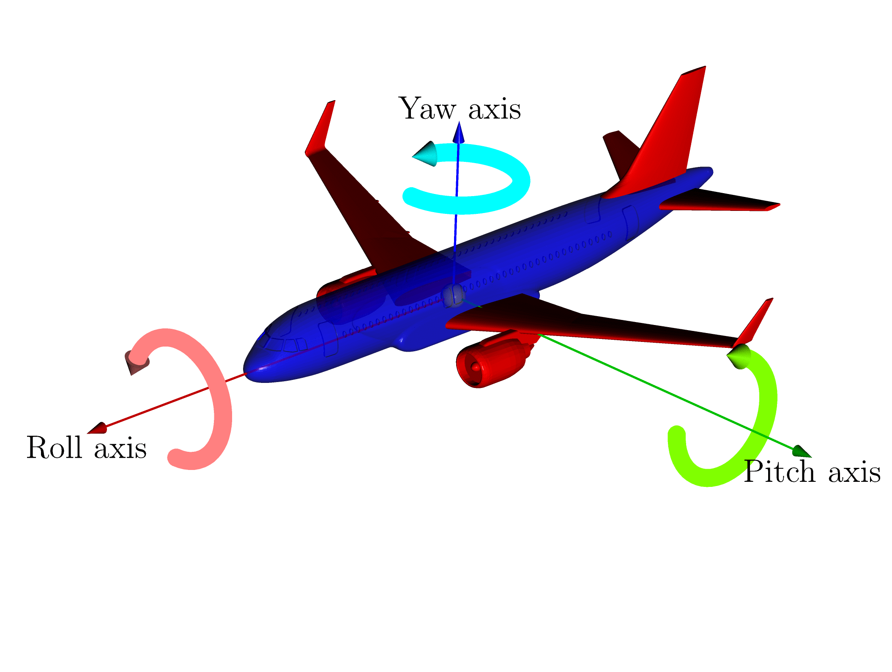
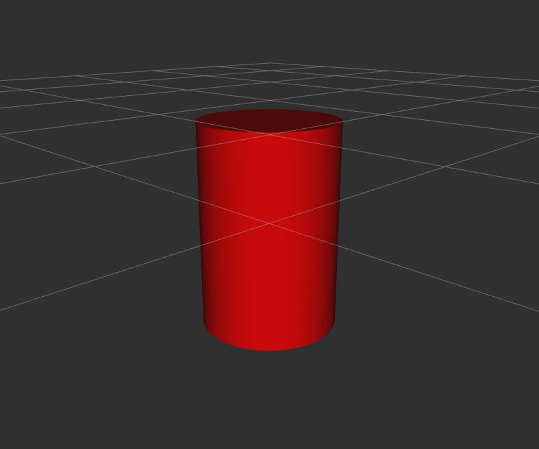
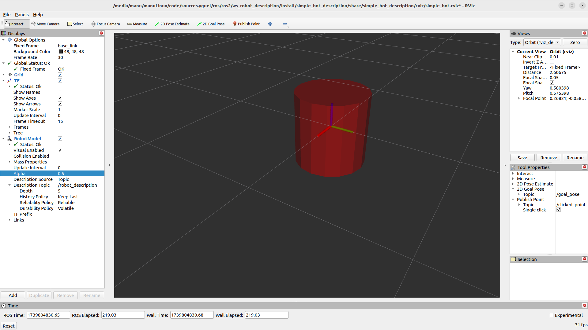
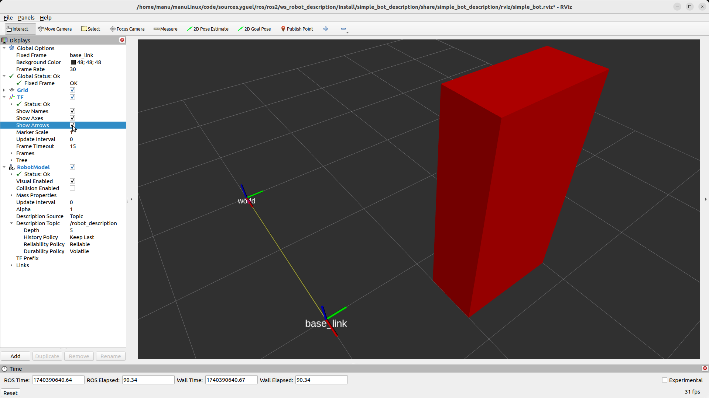
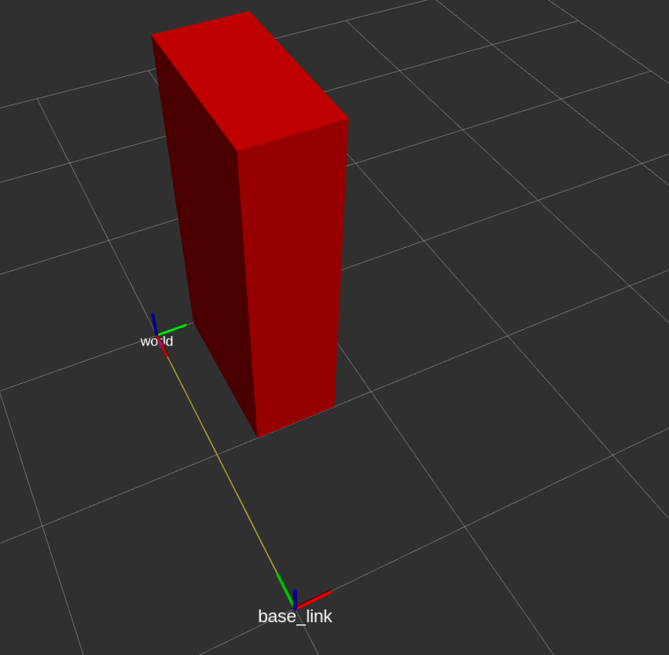

URDF for the Description of Non-Parallel Robots

Figure 7 Scanbot Robot and Its Kinematic Chain.
In the case of a non-parallel robot, the kinematic chains are open, and the set of kinematic chains of the robot can be represented by a tree, where the direct path from the root to a leaf of the tree corresponds to a kinematic chain.
The format used to describe non-parallel robots in ROS is URDF. We will now describe the syntax of URDF.
General Information about XML
URDF is based on the XML format, where information elements are organized using tags <tag> element </tag>, which can be nested.
Tag A tag is a markup construct that starts with < and ends with >. There are three types of tags:
start tag, such as
<section>,end tag, such as
</section>,empty tag, such as
<line-break />(note the/symbol before the>symbol at the end).
A tag can be empty because the information can be contained in the tag’s attribute.
Attribute An attribute consists of a name-value pair that can appear in a start tag or an empty tag. An example is <link name="base_link">, where the attribute name is “name” and its value is “base_link”. A tag can have multiple attributes, but each attribute can only appear once in a tag.
Element An element is a logical component of a document that starts with a start tag and ends with a corresponding end tag, or consists only of an empty tag. The characters between the start tag and the end tag, if any, are the content of the element and can contain markup, including other elements, called child elements. In the following code example, Listing 4, the visual element, lines 2-10, starts with the start tag <visual>, ends with the end tag </visual>, and has the child elements origin, geometry, and material. The mass element, line 18, is an element without children but has a value attribute and therefore consists of only an empty tag: <mass value="18"/>.
1<link name="${prefix}base_link">
2 <visual>
3 <origin xyz="0 0 0" rpy="0 0 0" />
4 <geometry>
5 <cylinder length="0.6" radius="0.3" />
6 </geometry>
7 <material name="kind_of_red">
8 <color rgba="0.6 0 .8 1" />
9 </material>
10 </visual>
11 <collision>
12 <origin xyz="0 0 0" rpy="0 0 0" />
13 <geometry>
14 <cylinder length="0.6" radius="0.3" />
15 </geometry>
16 </collision>
17 <inertial>
18 <mass value="10" />
19 <inertia ixx="1e-3" ixy="0.0" ixz="0.0" iyy="1e-3" iyz="0.0" izz="1e-3" />
20 <origin xyz="0 0 0" rpy="0 0 0" />
21 </inertial>
22</link>
General Information about URDF
In the URDF format, there are many different tags that can be used. They are all described in the official ROS documentation for the URDF format. There are three main ones to know: robot, link, and joint.
The robot tag and the XML preamble A correct XML file must have an XML preamble on the first line, and right after that, it contains a tag (called the root tag), in which all other tags are nested. For a URDF file, this root tag will be the robot tag, and the only thing to note here for now is that we can define the name attribute, which allows us to specify the name of our robot.
<?xml version="1.0"?>
<robot name="my_robot">
...
toutes les autres balises
...
</robot>
The two main tags in URDF are link and joint, and they are at the same nesting level at the base of the robot tag:
<?xml version="1.0"?>
<?xml-model href="https://raw.githubusercontent.com/ros/urdfdom/master/xsd/urdf.xsd" ?>
<robot name="my_robot" xmlns="http://www.ros.org">
<link> ... </link>
<link> ... </link>
<link> ... </link>
<joint> .... </joint>
<joint> .... </joint>
<joint> .... </joint>
</robot>
The link Tag
The link tag is used to describe a segment of the robot. The complete description of this tag is available in the link tag specification.
1<link name="${prefix}base_link">
2 <visual>
3 <origin xyz="0 0 0" rpy="0 0 0" />
4 <geometry>
5 <cylinder length="0.6" radius="0.3" />
6 </geometry>
7 <material name="kind_of_red">
8 <color rgba="0.6 0 .8 1" />
9 </material>
10 </visual>
11 <collision>
12 <origin xyz="0 0 0" rpy="0 0 0" />
13 <geometry>
14 <cylinder length="0.6" radius="0.3" />
15 </geometry>
16 </collision>
17 <inertial>
18 <mass value="10" />
19 <inertia ixx="1e-3" ixy="0.0" ixz="0.0" iyy="1e-3" iyz="0.0" izz="1e-3" />
20 <origin xyz="0 0 0" rpy="0 0 0" />
21 </inertial>
22</link>

Figure 8 link Element in a URDF File
We will now focus on understanding the different frames used in the description of a robot segment and how to define them in a URDF file.
In the origin tag (in visual or collision tags), the position and orientation of the segment’s frame relative to the parent’s frame are defined by the xyz and rpy attributes.
The translation is defined by the xyz attributes, which are the x, y, and z coordinates of the segment’s frame relative to the parent’s frame.
The rotation is defined by the rpy attributes, which are the rotation angles around the x, y, and z axes of the segment’s frame relative to the parent’s frame. rpy stands for “roll, pitch, yaw” or in French: “roulis, tangage, lacet”.
Rotation is always applied before translation, and the rotations are performed in the order roll, pitch, then yaw, as shown in the diagram below:

Figure 9 Roll, Pitch, and Yaw Rotations.

Figure 10 Rotation around the x axis (roll)
{kind=link}

Figure 11 Rotation around the y axis (pitch)

Figure 12 Rotation around the z axis (yaw)
Simple Example
Let’s create a simple URDF robot description.
For this, we will use the URDF model visualization tool provided by ROS2: rviz2.
To facilitate this step, we will create a ROS2 package dedicated to visualization using the tool developed by IRIS template2instance.
This tool allows for easy creation of a ROS2 package from a template.
For this, we need the view_robot_template template, which is a ROS2 package template dedicated to robot visualization using rviz2.
Installation of template2instance
Install poetry by following the official site instructions.
Create a system directory in your ROS2 workspace. Add a COLCON_IGNORE file in this directory to prevent packages created by template2instance from being compiled by colcon, the ROS2 build system.
mkdir -p ~/ros2_ws/system
touch ~/ros2_ws/system/COLCON_IGNORE
Copy the template2instance python module into the ros2_ws/system directory of your ROS2 workspace.
Run the following command:
cd ~/ros2_ws/system/template2instance && poetry install && cd -
Copy the view_robot_template template into the ros2_ws/system directory of your ROS2 workspace.
template2instance is a Python tool using the poetry dependency manager, which is used as follows:
poetry run create path_to_template path_to_new_package [--config path_to_config.json]
Let’s create a ROS2 package named simple_bot_description with the following configuration file.
{
"PACKAGE_NAME": "simple_bot_description",
"PACKAGE_VERSION": "1.0.0",
"PACKAGE_DESCRIPTION": "Launch file to view the robot",
"PACKAGE_MAINTAINER_EMAIL": "yguel.robotics@gmail.com",
"PACKAGE_MAINTAINER_NAME": "Manuel YGUEL",
"PACKAGE_LICENSE": "MIT",
"YEAR": 2024,
"LABORATORY": "Unistra, ICube/IRIS",
"LICENSE_TEXT": "\n# This file is licensed under the MIT License.\n# You may obtain a copy of the License at https://opensource.org/licenses/MIT\n",
"ROBOT_NAME": "simple_bot"
}
Download the configuration fileand copy it into the directory~/ros2_ws/system/template2instance/configs/pkg_gen_cfg_view_simple_bot.json.Run the following command:
cd ~/ros2_ws/system/template2instance && poetry run create ~/ros2_ws/system/view_robot_template ~/ros2_ws/src/simple_bot_description --config ~/ros2_ws/system/template2instance/configs/pkg_gen_cfg_view_simple_bot.json && cd -
Test the package by compiling it:
cd ~/ros2_ws
ros2_humble
ros2_build_only simple_bot_description
Launch the package:
ros2 launch simple_bot_description view_simple_bot.launch.py
If everything went well, you should see the default robot in rviz2:

Figure 13 The default robot when initializing a visualization package from the view_robot_template template.
The URDF file to study is named simple_bot_macro.xacro and is located in the directory ~/ros2_ws/src/simple_bot_description/urdf/simple_bot.
It is a xacro file, which means it is an XML file that can contain macros. These macros allow defining elements that can be reused multiple times in the file or deduced by function calls. However, the format is that of a URDF file, and by convention, we will refer to it as a URDF file.
Open this file and modify it to look like this:
1<?xml version="1.0" encoding="UTF-8"?>
2<robot xmlns:xacro="http://wiki.ros.org/xacro">
3
4 <xacro:macro name="simple_bot" params="prefix parent *origin">
5 <!-- LINKS -->
6 <!-- base link -->
7 <link name="${prefix}base_link">
8 <visual>
9 <origin xyz="0 0 0" rpy="0 0 0" />
10 <geometry>
11 <cylinder length="0.6" radius="0.3" />
12 </geometry>
13 <material name="red" />
14 </visual>
15 </link>
16 <!-- END LINKS -->
17
18 <!-- JOINTS -->
19 <!-- base_joint fixes base_link to the environment -->
20 <joint name="${prefix}base_joint" type="fixed">
21 <origin xyz="0 0 0" rpy="0 0 0" />
22 <parent link="${parent}" />
23 <child link="${prefix}base_link" />
24 </joint>
25 <!-- END JOINTS -->
26 </xacro:macro>
27</robot>
{kind=link}

Figure 14 Display of a cylinder segment with RVIZ corresponding to the previous URDF description
Close all windows and type CTRL-C in the terminal, then restart the package:
ros2 launch simple_bot_description view_simple_bot.launch.py
The Figure 14 shows the cylinder segment as it should appear in rviz2.
To understand how coordinate systems work, you need to display the axes. In rviz:
in the left panel (‘’Displays’’), in RobotModel change the Alpha value to 0.5. This changes the transparency of the robot model and allows you to see the axes.
If you don’t see the axes, make sure you have a TF and if not, add a TF in the left panel (‘’Displays’’) with the Add button. And make sure Show Axes is checked.
{kind=link}

Figure 15 Display of a cylinder segment with RVIZ with visible axes (Alpha=0.5, Show Axes: checked)
Segments defined by geometric primitives
A segment can be defined from 3 basic geometric shapes:
box:
<box size="10 20 40"/>. The side sizes (‘’size’’) are given in the order x,y,z. The sides of the box are parallel to the x, y, and z axes.cylinder:
<cylinder radius="10" length="40"/>the axis is always the z-axis.sphere:
<sphere radius="10"/>
In this case, the segment’s frame is by default at the center of the geometric shape (center of gravity).
We will modify the shape to use a box. This will allow us to clearly visualize the orientation of the shape in 3 dimensions.
And we will modify the origin element to move the segment relative to its origin.
So modify the URDF file to look like this:
1<?xml version="1.0" encoding="UTF-8"?>
2<robot xmlns:xacro="http://wiki.ros.org/xacro">
3
4 <xacro:macro name="simple_bot" params="prefix parent *origin">
5 <!-- LINKS -->
6 <!-- base link -->
7 <link name="${prefix}base_link">
8 <visual>
9 <origin xyz="0.5 1.5 0" rpy="0 0 0" />
10 <geometry>
11 <box size="0.5 1 2" />
12 </geometry>
13 <material name="red" />
14 </visual>
15 </link>
16 <!-- END LINKS -->
17
18 <!-- JOINTS -->
19 <!-- base_joint fixes base_link to the environment -->
20 <joint name="${prefix}base_joint" type="fixed">
21 <origin xyz="0 0 0" rpy="0 0 0" />
22 <parent link="${parent}" />
23 <child link="${prefix}base_link" />
24 </joint>
25 <!-- END JOINTS -->
26 </xacro:macro>
27</robot>

Figure 16 Display of a box segment with RVIZ corresponding to the URDF description on the left
We will modify the origin element to rotate the segment by 90 degrees around the roll axis: X (roll).
Note the order of geometric transformations
Geometric transformations are performed in the following order: rotation then translation.
1<?xml version="1.0" encoding="UTF-8"?>
2<robot xmlns:xacro="http://wiki.ros.org/xacro">
3
4 <xacro:macro name="simple_bot" params="prefix parent *origin">
5 <!-- LINKS -->
6 <!-- base link -->
7 <link name="${prefix}base_link">
8 <visual>
9 <origin xyz="0.5 1.5 0" rpy="${radians(90)} 0 0" />
10 <geometry>
11 <box size="0.5 1 2" />
12 </geometry>
13 <material name="red" />
14 </visual>
15 </link>
16 <!-- END LINKS -->
17
18 <!-- JOINTS -->
19 <!-- base_joint fixes base_link to the environment -->
20 <joint name="${prefix}base_joint" type="fixed">
21 <xacro:insert_block name="origin" />
22 <parent link="${parent}" />
23 <child link="${prefix}base_link" />
24 </joint>
25 <!-- END JOINTS -->
26 </xacro:macro>
27</robot>

Figure 17 Display of a box segment with RVIZ corresponding to the URDF description on the left
Note well what is moved by the xyz and rpy attributes of the origin tag
It is not the origin of the frame that is moved but the frame in which the geometric shape is defined.
Indeed, if we set the alpha parameter to 0.5 to see through, the center of the box does not contain a frame.
We will see in the following the difference with the changes in the origin tag of the joints with the description of the joint tag.
A Xacro point and launch files
Let’s look at the organization of the ROS2 project simple_bot_description (after adding various URDF files):
.
├── CMakeLists.txt
├── config
├── doc
├── launch
│ └── view_simple_bot.launch.py
├── meshes
│ ├── collision
│ └── visual
├── package.xml
├── README.md
├── rviz
│ └── simple_bot.rviz
├── test
│ └── simple_bot_test_urdf_xacro.py
└── urdf
├── common
│ ├── inertials.xacro
│ └── materials.xacro
├── simple_bot
│ ├── simple_bot_macro.xacro
│ ├── simple_bot__my01_bot__macro.xacro
│ ├── simple_bot__my02_tr_bot__macro.xacro
│ ├── simple_bot__my02_tr_plus_rot_bot__macro.xacro
│ ├── simple_bot__my03_bot__macro.xacro
│ └── simple_bot__my04_bot__macro.xacro
└── simple_bot.urdf.xacro
What happens when we launch the simple_bot_description package with the following command?
ros2 launch simple_bot_description view_simple_bot.launch.py
The file view_simple_bot.launch.py is executed.
1# Copyright (c) 2024, Unistra, ICube/IRIS
2#
3#
4# This file is licensed under the MIT License.
5# You may obtain a copy of the License at https://opensource.org/licenses/MIT
6
7
8#
9# The template of this file is taken from source https://github.com/StoglRobotics/ros_team_workspace repository.
10# Copyright (c) 2024, Stogl Robotics Consulting UG (haftungsbeschränkt) (template)
11# Author of the template: Dr. Denis
12#
13
14from launch import LaunchDescription
15from launch.actions import DeclareLaunchArgument
16from launch.substitutions import Command, FindExecutable, LaunchConfiguration, PathJoinSubstitution
17from launch_ros.actions import Node
18from launch_ros.substitutions import FindPackageShare
19
20def generate_launch_description():
21 # Declare arguments
22 declared_arguments = []
23 declared_arguments.append(
24 DeclareLaunchArgument(
25 "description_package",
26 default_value="simple_bot_description",
27 description="Description package of the simple_bot. Usually the argument is not set, \
28 it enables use of a custom description.",
29 )
30 )
31 declared_arguments.append(
32 DeclareLaunchArgument(
33 "prefix",
34 default_value='""',
35 description="Prefix of the joint names, useful for \
36 multi-robot setup. If changed than also joint names in the controllers' configuration \
37 have to be updated.",
38 )
39 )
40
41 # Initialize Arguments
42 description_package = LaunchConfiguration("description_package")
43 prefix = LaunchConfiguration("prefix")
44
45 # Get URDF via xacro
46 robot_description_content = Command(
47 [
48 PathJoinSubstitution([FindExecutable(name="xacro")]),
49 " ",
50 PathJoinSubstitution(
51 [FindPackageShare(description_package), "urdf", "simple_bot.urdf.xacro"]
52 ),
53 " ",
54 "prefix:=",
55 prefix,
56 " ",
57 ]
58 )
59
60 robot_description = {"robot_description": robot_description_content}
61
62 rviz_config_file = PathJoinSubstitution(
63 [FindPackageShare(description_package), "rviz", "simple_bot.rviz"]
64 )
65
66 joint_state_publisher_node = Node(
67 package="joint_state_publisher_gui",
68 executable="joint_state_publisher_gui",
69 )
70 robot_state_publisher_node = Node(
71 package="robot_state_publisher",
72 executable="robot_state_publisher",
73 output="both",
74 parameters=[robot_description],
75 )
76 rviz_node = Node(
77 package="rviz2",
78 executable="rviz2",
79 name="rviz2",
80 output="log",
81 arguments=["-d", rviz_config_file],
82 )
83
84 return LaunchDescription(
85 declared_arguments
86 + [
87 joint_state_publisher_node,
88 robot_state_publisher_node,
89 rviz_node,
90 ]
91 )
We see that in lines 45 to 58, the xacro file simple_bot.urdf.xacro located in the directory ~/ros2_ws/src/simple_bot_description/urdf/ is transformed into a URDF file.
1<?xml version="1.0" encoding="UTF-8"?>
2<robot xmlns:xacro="http://wiki.ros.org/xacro" name="simple_bot">
3
4 <!-- Use this if parameters are set from the launch file, otherwise delete -->
5 <xacro:arg name="prefix" default="" />
6
7 <xacro:arg name="use_mock_hardware" default="false" />
8 <xacro:arg name="mock_sensor_commands" default="false" />
9 <xacro:arg name="sim_gazebo_classic" default="false" />
10 <xacro:arg name="sim_gazebo" default="false" />
11 <xacro:arg name="simulation_controllers" default="" />
12
13 <xacro:include filename="$(find simple_bot_description)/urdf/simple_bot/simple_bot_macro.xacro" />
14
15 <!-- create link fixed to the "world" -->
16 <link name="world" />
17
18 <!-- Load robot's macro with parameters -->
19 <!-- set prefix if multiple robots are used -->
20 <xacro:simple_bot prefix="$(arg prefix)" parent="world">
21 <origin xyz="0 0 0" rpy="0 0 0" /> <!-- position robot in the world -->
22 </xacro:simple_bot>
23
24</robot>
At line 13, we see a xacro command that allows including another xacro file. This command is declared with a xacro:include tag and uses another command named find which allows finding the path of a package in the install directory of the workspace, and its return value is accessed with the syntax $(find simple_bot_description).
In the Listing 9, you may have noticed another useful xacro command that allows you to manipulate angles in degrees and convert them to radians: ${radians(90)}.
Function Call in a Xacro Command
Note that when making a function call in a xacro command, curly braces are used instead of parentheses for the command’s initial delimiters.
A Python file xxxxx.launch.py can use command-line arguments.
In the file above, lines 23-39 define 2 arguments:
the default package name (
description_package)the prefix that can be applied before the path of each resource, which allows reusing the same launch file for multiple instances of objects, such as robots, in the case of a robot fleet.
The syntax is:
declared_arguments.append(
DeclareLaunchArgument(
"name_of_the_argument_for_the_python_launch_file",
default_value='default argument value',
description="Description given to the user \
when he/she is using the --help command \
or when documentation is automatically generated.",
)
)
The value of a parameter is then retrieved using the LaunchConfiguration function from the launch.substitutions module (lines 42-43).
It is then possible to use the retrieved values to perform substitutions in configuration files, for example, lines 45-58, the xacro command is called on the file simple_bot.urdf.xacro with the parameter prefix:="" (here, the prefix is an empty string).
To easily visualize multiple different robot descriptions in rviz2 and track frame transformations, it is useful to create multiple xacro files based on the simple_bot_macro.xacro file.
For example, we have created the following files:
simple_bot__my01_bot__macro.xacro
simple_bot__my02_tr_bot__macro.xacro
simple_bot__my02_tr_plus_rot_bot__macro.xacro
simple_bot__my03_bot__macro.xacro
simple_bot__my04_bot__macro.xacro
which you do not yet have and which appear in the tree structure of the simple_bot_description package shown above.
to modify only a few parameters.
Exercise 1 (Xacro / Launch file)
Modifiez les fichiers view_simple_bot.launch.py et simple_bot.urdf.xacro pour que le fichier affiché par rviz2 soit paramétrable et par exemple affiche le fichier simple_bot__my03_bot__macro.xacro quand on lance la commande:
ros2 launch simple_bot_description view_simple_bot.launch.py urdf:=simple_bot__my03_bot__macro.xacro
Solution to Exercise 1 (Xacro / Launch file)
Modifications to the view_simple_bot.launch.py File:
1# Copyright (c) 2024, Unistra, ICube/IRIS
2#
3#
4# This file is licensed under the MIT License.
5# You may obtain a copy of the License at https://opensource.org/licenses/MIT
6
7
8#
9# The template of this file is taken from source https://github.com/StoglRobotics/ros_team_workspace repository.
10# Copyright (c) 2024, Stogl Robotics Consulting UG (haftungsbeschränkt) (template)
11# Author of the template: Dr. Denis
12#
13
14from launch import LaunchDescription
15from launch.actions import DeclareLaunchArgument
16from launch.substitutions import Command, FindExecutable, LaunchConfiguration, PathJoinSubstitution
17from launch_ros.actions import Node
18from launch_ros.substitutions import FindPackageShare
19
20def generate_launch_description():
21 # Declare arguments
22 declared_arguments = []
23 declared_arguments.append(
24 DeclareLaunchArgument(
25 "description_package",
26 default_value="simple_bot_description",
27 description="Description package of the simple_bot. Usually the argument is not set, \
28 it enables use of a custom description.",
29 )
30 )
31 declared_arguments.append(
32 DeclareLaunchArgument(
33 "prefix",
34 default_value='""',
35 description="Prefix of the joint names, useful for \
36 multi-robot setup. If changed than also joint names in the controllers' configuration \
37 have to be updated.",
38 )
39 )
40 declared_arguments.append(
41 DeclareLaunchArgument(
42 'urdf', # name of the argument (what you type on CLI)
43 default_value='simple_bot__my02_bot__macro.xacro', # fallback if not set via CLI
44 description='The xacro file holding the urdf description for the robot'
45 )
46 )
47
48 # Initialize Arguments
49 description_package = LaunchConfiguration("description_package")
50 prefix = LaunchConfiguration("prefix")
51 urdf = LaunchConfiguration("urdf")
52
53 # Get URDF via xacro
54 robot_description_content = Command(
55 [
56 PathJoinSubstitution([FindExecutable(name="xacro")]),
57 " ",
58 PathJoinSubstitution(
59 [FindPackageShare(description_package), "urdf", "simple_bot.urdf.xacro"]
60 ),
61 " ",
62 "prefix:=",
63 prefix,
64 " ",
65 "bot_urdf:=",
66 urdf,
67 " ",
68 ]
69 )
70
71 robot_description = {"robot_description": robot_description_content}
72
73 rviz_config_file = PathJoinSubstitution(
74 [FindPackageShare(description_package), "rviz", "simple_bot.rviz"]
75 )
76
77 joint_state_publisher_node = Node(
78 package="joint_state_publisher_gui",
79 executable="joint_state_publisher_gui",
80 )
81 robot_state_publisher_node = Node(
82 package="robot_state_publisher",
83 executable="robot_state_publisher",
84 output="both",
85 parameters=[robot_description],
86 )
87 rviz_node = Node(
88 package="rviz2",
89 executable="rviz2",
90 name="rviz2",
91 output="log",
92 arguments=["-d", rviz_config_file],
93 )
94
95 return LaunchDescription(
96 declared_arguments
97 + [
98 joint_state_publisher_node,
99 robot_state_publisher_node,
100 rviz_node,
101 ]
102 )
Modifications to the simple_bot.urdf.xacro File:
1<?xml version="1.0" encoding="UTF-8"?>
2<robot xmlns:xacro="http://wiki.ros.org/xacro" name="simple_bot">
3
4 <!-- Use this if parameters are set from the launch file, otherwise delete -->
5 <xacro:arg name="prefix" default="" />
6
7 <xacro:arg name="use_mock_hardware" default="false" />
8 <xacro:arg name="mock_sensor_commands" default="false" />
9 <xacro:arg name="sim_gazebo_classic" default="false" />
10 <xacro:arg name="sim_gazebo" default="false" />
11 <xacro:arg name="simulation_controllers" default="" />
12
13 <xacro:include filename="$(find simple_bot_description)/urdf/simple_bot/$(arg bot_urdf)" />
14
15 <!-- create link fixed to the "world" -->
16 <link name="world" />
17
18 <!-- Load robot's macro with parameters -->
19 <!-- set prefix if multiple robots are used -->
20 <xacro:simple_bot prefix="$(arg prefix)" parent="world">
21 <origin xyz="0 0 0" rpy="0 0 0" /> <!-- position robot in the world -->
22 </xacro:simple_bot>
23
24</robot>
The joint Tag
The joint tag is used to describe a joint between two segments of the robot. The complete description of this tag is available in the joint tag specification.
1<joint name="r_joint" type="revolute">
2 <origin xyz="0 0 1" rpy="0 0 ${radians(90)}" />
3 <parent link="link1" />
4 <child link="link2" />
5 <axis xyz="0 0 1" />
6
7 <limit effort="${radians(30)}" velocity="1.0" lower="${radians(-90)}" upper="${radians(90)}" />
8</joint>
joint tag of type floating with the elements origin, parent, child, limit, dynamics, calibration, safety_controller, and mimic 1<joint name="f_joint" type="floating">
2 <origin xyz="0 0 1" rpy="0 0 3.1416" />
3 <parent link="link1" />
4 <child link="link2" />
5
6 <calibration rising="0.0" />
7 <dynamics damping="0.0" friction="0.0" />
8 <limit effort="30" velocity="1.0" lower="-2.2" upper="0.7" />
9 <safety_controller k_velocity="10" k_position="15" soft_lower_limit="-2.0"
10 soft_upper_limit="0.5" />
11 <mimic joint="joint_name" multiplier="1.0" offset="0.0" />
12</joint>

Figure 18 joint Element in a URDF File
The type attribute of the joint tag allows defining the type of the joint (revolute, prismatic, continuous, fixed, floating, or planar).
revolute: a joint of type revolute with limits.
prismatic: a joint of type prismatic.
continuous: a joint of type continuous with unlimited rotation (like a wheel).
fixed: a joint of type fixed (no movement).
floating: a joint of type floating (6 degrees of freedom).
planar: a joint of type planar (2 degrees of freedom in translation and 1 degree of freedom in rotation).
The elements of the joint tag that we will use the most are:
origin: which defines the position and orientation of the joint’s frame relative to the parent’s frame.
parent: which defines the name of the parent segment.
child: which defines the name of the child segment.
type: which defines the type of the joint (
revolute,prismatic,continuous,fixed,floating, orplanar).axis: which defines the axis of rotation or translation for the joint, used only for all joints except
fixedandfloating. Its default value is a unit axis parallel to the x-axis of the joint’s frame \((1,0,0)\). This axis corresponds to: the axis of rotation forrevoluteandcontinuousjoints, the axis of translation forprismaticjoints, and the normal of the support plane forplanarjoints.limit: which defines the limits of the joint, necessary only for
revoluteorprismaticjoints. The limits are defined by the lower and upper attributes, which are the minimum and maximum values of the joint (in radians forrevolutejoints and in meters forprismaticjoints), by the effort attribute, which is the maximum force the joint can withstand (in Newton-meters forrevoluteandcontinuousjoints, measuring torque, and in Newtons forprismaticjoints), and by the velocity attribute, which is the maximum speed of the joint (in radians per second forrevoluteandcontinuousjoints and in meters per second forprismaticjoints).
In the origin tag of the joint tag, the position and orientation of the joint’s frame relative to the parent’s frame are defined by the xyz and rpy attributes. Similarly, for segments (link), rotation is applied before translation. In RVIZ2, this transformation is visible through a yellow arrow pointing from the child frame to the parent frame.
1<?xml version="1.0" encoding="UTF-8"?>
2<robot xmlns:xacro="http://wiki.ros.org/xacro">
3
4 <xacro:macro name="simple_bot" params="prefix parent *origin">
5 <!-- LINKS -->
6 <!-- base link -->
7 <link name="${prefix}base_link">
8 <visual>
9 <origin xyz="0.5 1.5 0" rpy="0 0 0" />
10 <geometry>
11 <box size="0.5 1 2" />
12 </geometry>
13 <material name="red" />
14 </visual>
15 </link>
16 <!-- END LINKS -->
17
18 <!-- JOINTS -->
19 <!-- base_joint fixes base_link to the environment -->
20 <joint name="${prefix}base_joint" type="fixed">
21 <origin xyz="2 0 0" rpy="0 0 0" />
22 <parent link="${parent}" />
23 <child link="${prefix}base_link" />
24 </joint>
25 <!-- END JOINTS -->
26 </xacro:macro>
27</robot>
{kind=link}

Figure 19 Display of a joint in RVIZ corresponding to the URDF description on the left. The link is represented by a yellow arrow from base_link to world (with the Show Arrows option checked).
The frame change introduced by the origin tag in the joint tag occurs before the transformation of the segment (link tag). As with the joint tag, rotation is performed before translation (the frame rotates around the origin of the parent frame and is then translated). The rotation and translation are expressed in the parent’s frame.
1<?xml version="1.0" encoding="UTF-8"?>
2<robot xmlns:xacro="http://wiki.ros.org/xacro">
3
4 <xacro:macro name="simple_bot" params="prefix parent *origin">
5 <!-- LINKS -->
6 <!-- base link -->
7 <link name="${prefix}base_link">
8 <visual>
9 <origin xyz="0.5 1.5 0" rpy="0 0 0" />
10 <geometry>
11 <box size="0.5 1 2" />
12 </geometry>
13 <material name="red" />
14 </visual>
15 </link>
16 <!-- END LINKS -->
17
18 <!-- JOINTS -->
19 <!-- base_joint fixes base_link to the environment -->
20 <joint name="${prefix}base_joint" type="fixed">
21 <origin xyz="2 0 0" rpy="0 0 ${radians(90)}" />
22 <parent link="${parent}" />
23 <child link="${prefix}base_link" />
24 </joint>
25 <!-- END JOINTS -->
26 </xacro:macro>
27</robot>
{kind=link}

Figure 20 Rotation of the joint’s frame in addition to translation. Note that rotation is performed before translation (if it were the opposite, the yellow arrow would align with the green axis of the world frame).